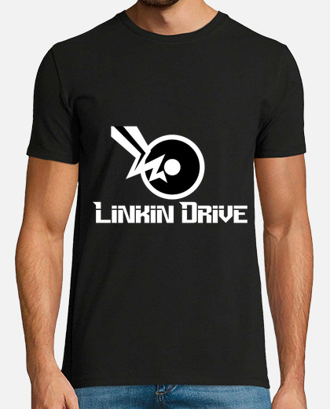

Camiseta
¡Despierta tus sentidos con nuestra exclusiva taza de Linkin Drive! Hecha de cerámica de alta calidad, esta taza presenta un diseño vibrante que captura la esencia de nuestra música y energía. Ideal para disfrutar de tu café matutino o té de la tarde, cada sorbo te recordará la pasión y el ritmo de nuestros temas. Con una capacidad perfecta, es la compañera ideal para tus momentos de creatividad. ¡Haz de cada bebida una experiencia única con la taza de Linkin Drive!